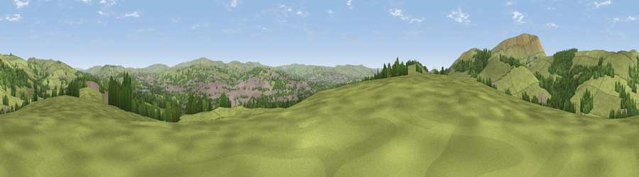

Viewpoint near Roughlee
#19190 in England · top 40% of its area beats it · near RoughleeThe view, rendered

A 360° render of this exact spot computed from the terrain model, tree cover and land cover — summer colours, afternoon light, calibrated against photographs of famous viewpoints. Real trees, hedges and buildings will differ in detail.
The panorama
Grey silhouette: terrain skyline in each direction (720 bearings, Earth curvature and refraction included). Dashed green: skyline with trees (+15 m) and buildings (+8 m) as obstacles. Blue strip: how far the ground is visible on each bearing.
Where the view opens
Wedge length = distance to the farthest visible ground on that bearing (vegetation-aware). Rings at 10, 25 and 50 km.
What fills the view
67% grassland · 21% woodland · 12% built-up
Angular shares of the visible panorama (visual magnitude), not map area. Landscape diversity 0.38 (0–1 Shannon).
Key numbers
More beautiful places nearby
The staircase of upgrades: each row has a higher view potential than everything closer. Driving times are estimates from straight-line distance, calibrated against real road routing — check an actual route before setting out.
| Place | Direction | Drive | Score |
|---|---|---|---|
| Viewpoint near Barley | W · 2 km | ~6 min | 64.1 |
| Viewpoint near Barley | W · 3 km | ~7 min | 64.6 |
| Viewpoint near Blacko | N · 4 km | ~9 min | 68.9 |
| Pendle Hill | WNW · 4 km | ~9 min | 76.5 |
| Viewpoint near Edenfield | S · 21 km | ~35 min | 77.5 |
| Darwen Hill | SW · 24 km | ~39 min | 80.7 |
| Rivington Pike | SW · 33 km | ~50 min | 81.9 |
| White Brow | SSW · 33 km | ~50 min | 82.9 |
53.85216, -2.24281 · source: screening · position refined by local search. Computed location — check access rights before visiting.